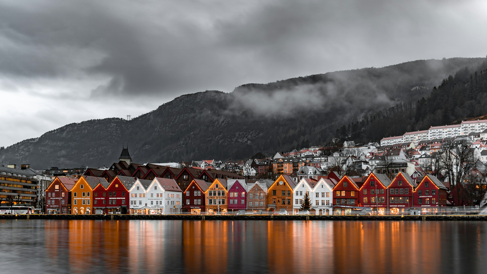

Job Search Resources
Welcome to Job Resources in the Nordic Countries! Whether you're a
local resident or an international job seeker, we provide valuable
resources to help you navigate the job market in Sweden, Norway,
Denmark, Finland, and Iceland.

Explore our curated collection of job search strategies, resume
tips, interview techniques, and links to job search platforms
specific to each Nordic country. From industry insights to cultural
nuances, we're here to support you in your job search journey.

Explore Countries
Contact
jobsnordic@gmail.com